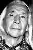

Country:United States, 181 minutes
Spoken languages:
Genres:Adventure, Drama, Western
Director(s):Kevin Costner
Writer(s):Michael Blake
Video Codec:Unknown
Number: 1001


Certification:
Storyline:
Wounded Civil War soldier, John Dunbar tries to commit suicide—and becomes a hero instead. As a reward, he's assigned to his dream post, a remote junction on the Western frontier, and soon makes unlikely friends with the local Sioux tribe.
Cast: 


Medium: Original DVD,
Loaned: No
Aspect ratio: Unknown